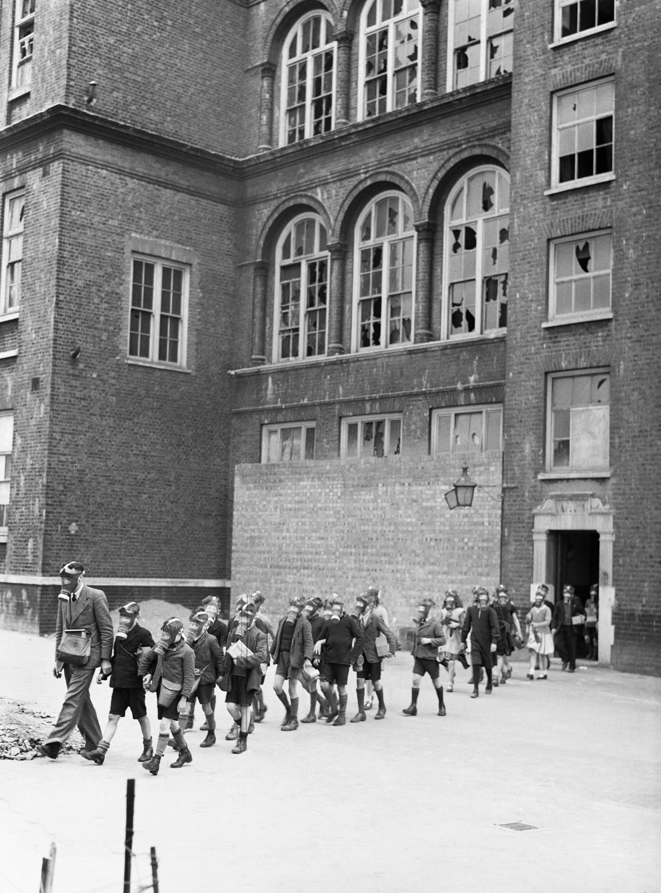
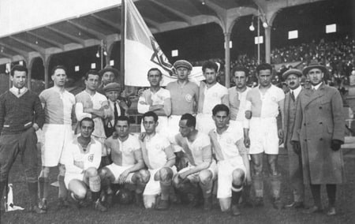
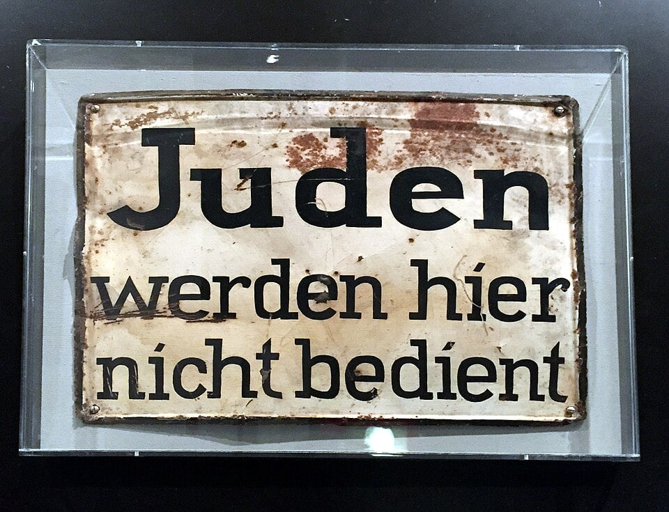
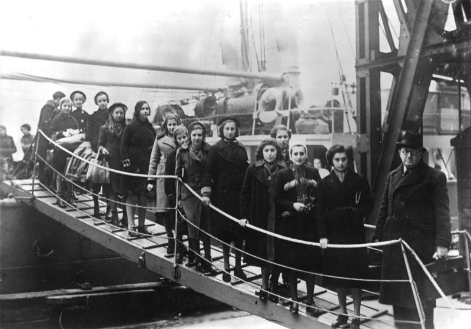
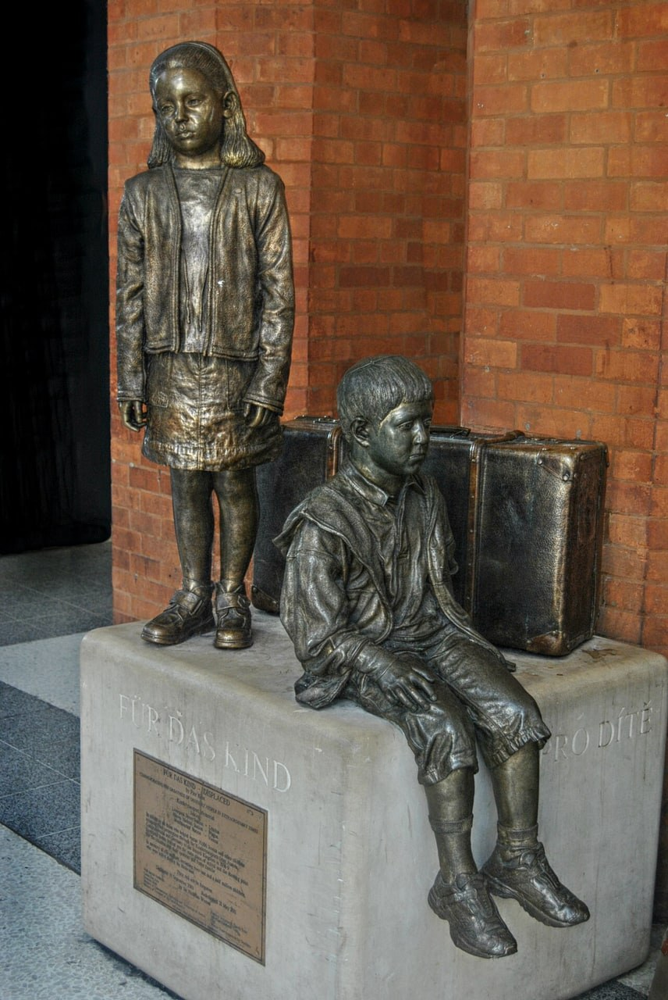
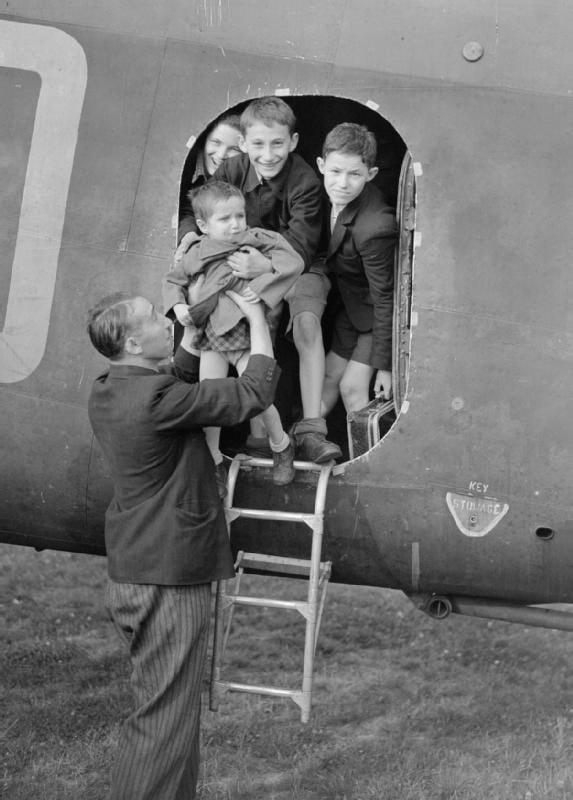

KEY STAGE 2 HISTORY • YEARS 5 & 6
28-PAGE PUPIL WORKBOOK
WORLD WAR II
Children, Courage & The Home Front (1933–1945)
Unit Big Question
“How did ordinary children, families, and brave volunteers survive and stand up for others during the Second World War?”
Historian’s Workbook Details
HISTORICAL ENQUIRY MISSION 01
Outbreak 1939 & Home Front Mobilisation
Enquiry Question: Why did ordinary British families carry cardboard boxes and tape their windows in September 1939?
MISSION
01
Air Raid Siren: A loud wailing mechanical horn that warned people when enemy bomber planes were approaching.
Gas Mask: A rubber face mask with a filter box worn to breathe safely if poison gas was dropped.
Blackout: The wartime rule that every window, streetlamp, and headlamp had to be covered after dark so bombers could not see towns below.
ARP Warden: An Air Raid Precautions volunteer in a black helmet with a white "W" who checked blackout curtains and guided families to shelters.

Source A (Photograph): British schoolchildren marching in pairs across their playground during a gas mask drill. (Imperial War Museum)
On 1 September 1939, Nazi Germany invaded Poland and Britain began a nationwide Blackout at sunset. Two days later, at 11:15am on Sunday 3 September 1939, Prime Minister Neville Chamberlain announced on BBC wireless radio that Britain was at war. Within minutes, a false-alarm air raid siren wailed across London.
Remembering poison gas from the First World War, the government issued 38 million rubber gas masks in cardboard boxes with string shoulder straps. Families hung black curtains and stuck brown paper tape across glass panes to stop sharp splinters flying indoors.
Task 1: Source Detective • The Civilian Rubber Gas Mask
Primary Evidence

Source B (Artefact): 1939 British civilian black rubber gas mask with clear eyepiece window and green metal filter tin.
1. Look at Source B. How did the rubber mask, eyepiece, and front filter tin protect a person during a gas alert?
2. Why was every child told to carry their mask inside a cardboard box on a string strap wherever they went (to school, the shops, and play)?
Task 2: September 1939 Timeline • Britain Prepares
Chronology
STEP 1 • 1 SEPT 1939
Invasion & Blackout
Germany invades Poland; Britain switches off streetlamps and covers windows at sunset.
Why could even one chink of bedroom light be dangerous at night?
STEP 2 • 3 SEPT 1939
11:15am Radio Broadcast
Chamberlain announces war on BBC radio; minutes later a false-alarm siren wails.
How might families listening around the wireless radio have felt?
STEP 3 • AUTUMN 1939
Daily Home Front Rules
38 million gas masks, taped windows, Identity Cards, and ARP wardens on patrol.
Why did Britain prepare months before heavy bombing began?
Task 3: Home Front Emergency Kit • Inspect & Explain
Visual Investigation
1939 Civilian Respirator Box
FULL NAME: ___________________
SCHOOL: ______________________
TOWN / STREET: _______________
N.I. CARD NO: _________________
CARRY OVER SHOULDER AT ALL TIMES
Complete the gas mask carrier label clearly in pencil
1. Cardboard Gas Mask Box & String Strap
How did the box protect the rubber mask while keeping hands free?
2. Anti-Dimming Stick (Eyepiece Soap)
Why was this rubbed inside the clear eyepieces before wearing the mask?
3. Criss-Cross Gummed Window Tape
Why did families stick brown paper strips across glass window panes?
4. National Identity Card
Why did every adult and child carry an official Identity Card?
Task 4: Thinking Heads • Two Historical Viewpoints
Perspectives
1
10-Year-Old Schoolchild in a Gas Mask Drill
What does the rubber mask smell and feel like in class, and how does practising together with classmates make you feel?
2
ARP Warden Patrolling Dark Streets at Night
Why is your job checking curtains and calling "Put that light out!" so important for your whole street?
Task 5: Historian Mission Challenge • Answering the Enquiry
Extended Writing
Starter: "In September 1939, ordinary British families carried cardboard boxes and taped their windows because..." • Word Bank: 38 million gas masks • Blackout curtains • criss-cross tape • Home Front
HISTORICAL ENQUIRY MISSION 02
Operation Pied Piper & British Evacuation
Enquiry Question: What was it like for 1.5 million British children to be sent away from home with a brown paper luggage label?
MISSION
02
Evacuee: A child or mother sent away from a busy city to live safely in the countryside during the war.
Operation Pied Piper: The government codename for moving 1.5 million children and mothers out of British cities in September 1939.
Billeting Officer: The local official in a country town or village whose job was to find host homes for arriving evacuees.
Host Family: A country family who took evacuee children into their home and cared for them during the war.

Source A (Photograph): Schoolchildren walking to a railway station in September 1939 wearing brown luggage labels and gas mask boxes.
On Friday 1 September 1939—two days before war was officially declared—Britain launched Operation Pied Piper. Across three days, 1.5 million schoolchildren, teachers, and mothers with toddlers under five left crowded industrial cities such as London, Manchester, Liverpool, and Glasgow.
School-age children travelled in class groups without their parents to safer countryside reception areas like Devon, Cornwall, and Wales, where Billeting Officers placed them with local host families.
Task 1: Luggage Label & Map Detective • Operation Pied Piper
Dual Source Enquiry

Source B (Map): City danger zones (ports and factories) and safer countryside reception areas in 1939.
1. Why did every evacuee wear a brown paper luggage label tied to their coat, and who helped guide school lines safely onto the trains?
2. Looking at Source B, why did trains take London children west to Devon, Cornwall, and Wales rather than south-east to Kent?
Task 2: Pied Piper Timeline • City Platform to Country Billet
Chronology
STEP 1 • 1 SEPT 1939
Goodbye at the Station
1.5 million children wave goodbye to parents at city barriers and board steam trains with teachers.
Why did school-age children travel with teachers rather than parents?
STEP 2 • TRAIN JOURNEY
Heading to Reception Areas
Long steam train ride eating packed sandwiches; signs hidden and destinations often kept quiet.
What sights out of the carriage window surprised city children?
STEP 3 • VILLAGE HALL
Billeting Officer Placement
Children gather in village halls where Billeting Officers match them with local host homes.
Why were evacuee experiences so varied from home to home?
Task 3: The Sept 1939 Evacuee Suitcase • Essential Packing List
Historical Enquiry
OPERATION PIED PIPER TAG
CHILD: _______________________
CITY SCHOOL: _________________
RECEPTION AREA: Devon / Wales
Fill in an authentic September 1939 luggage tag above
1. Gas Mask in Cardboard Box (Compulsory)
Why did evacuees still carry gas masks even in quiet country villages?
2. Warm Woollen Jumper, Nightclothes & Boots
Why did government lists insist on warm clothes and sturdy boots?
3. Toothbrush, Comb, Towel & Soap
Why did each child pack their own wash kit for their host family?
4. Sandwiches, Apple & Stamped Postcard Home
Why was a pre-addressed postcard so important on arrival?
Task 4: Thinking Heads • Two Historical Viewpoints
Perspectives
1
City Evacuee Waiting in the Village Hall
How do you feel waving goodbye at the railway station, seeing green fields and cows, and waiting to meet your host family?
2
Countryside Host Mother Welcoming Evacuees
What preparations are you making in your cottage to keep tired, homesick city children safe and fed?
Task 5: Historian Mission Challenge • Answering the Enquiry
Extended Writing
Starter: "Dear Mum and Dad, I arrived safely in the countryside after a long steam train ride with my school class..." • Word Bank: steam train • luggage label • Billeting Officer • host family
HISTORICAL ENQUIRY MISSION 03
Pre-War Life & Rights Lost (1933–1938)
Enquiry Question: What was everyday life like for Jewish children in Europe before 1933, and how were their rights taken away step by step?
MISSION
03
Schultüte: A bright cardboard cone filled with sweets and pencils given to children in Germany on their very first day of primary school.
Civil Rights: The fair laws and freedoms that protect every citizen equally, such as going to school, voting, and using public parks.
Discrimination: Treating a person or group unfairly because of their religion, background, or who they are.
Persecution: Cruel and repeated mistreatment of a group of people, often backed by unfair government laws.

Source A (Photograph, 1925): Footballers of Jewish sports club SC Hakoah Vienna standing proudly before a packed stadium with their Star of David banner (Public Domain).
Before Adolf Hitler and the Nazi Party took power in Germany in January 1933, Jewish families across Germany, Austria, and Czechoslovakia lived ordinary, settled lives as neighbours, doctors, shopkeepers, musicians, and schoolchildren.
Between 1933 and 1938—before the Second World War had even begun—the Nazi government passed hundreds of unfair anti-Jewish laws step by step, taking away citizenship in 1935 and banning Jewish children from state schools in November 1938.
Task 1: Pre-War Photo & Exclusion Sign Detective • Before and After
Primary Evidence

Source B (Metal Sign, Germany, c. 1935–1937): Original anti-Jewish sign reading "Juden werden hier nicht bedient" ("Jews are not served here"), preserved in the Jewish Museum Berlin.
1. What does Source A (the 1925 Jewish sports club football team) prove about Jewish communities’ hobbies, pride, and everyday lives?
2. Why do historians study pre-war family photographs like Source A before examining exclusion signs like Source B and the November 1938 school ban?
Task 2: 1933–1938 Timeline • Rights Taken Away Step by Step
Chronology
STEP 1 • JAN 1933
Early Bans Begin
Hitler becomes Chancellor; shop boycotts and bans from sports clubs and swimming pools begin.
How would losing your sports team or park affect a young child?
STEP 2 • SEPT 1935
The Nuremberg Laws
Unfair laws strip German Jewish families of their citizenship and equal legal protection.
What did losing citizenship mean for families who loved their country?
STEP 3 • NOV 1938
Kristallnacht & School Ban
9–10 Nov: synagogues and shops attacked; 15 Nov: Jewish children expelled from state schools.
Why did parents now search urgently to get their children to safety?
Task 3: Before 1933 vs Late 1938 • Comparing Everyday Rights
Historical Comparison
Step-by-Step Timeline
• Before 1933: Equal citizens, shared schools, clubs & festivals.
• 1933–34: Shut out of sports clubs & civil jobs.
• 1935: Nuremberg Laws remove citizenship.
• Nov 1938: Kristallnacht & state school ban.
Unfair laws built up over 5 peacetime years before war began
1. School & Classroom Friendships
Compare going to local school before 1933 with 15 November 1938:
2. Football Teams, Swimming Pools & Parks
How did everyday play and hobbies change for Jewish children?
3. Citizenship & Belonging (1935 Nuremberg Laws)
What rights were taken away from Jewish parents and neighbours?
4. Safety After Kristallnacht (9–10 November 1938)
Why did staying in Germany or Austria suddenly become too dangerous?
Task 4: Thinking Heads • Two Historical Viewpoints
Perspectives
1
Jewish Pupil Shut Out of School (November 1938)
How do you feel being told you can no longer walk through your school gates or sit beside your classmates?
2
Non-Jewish Classmate Looking at an Empty Desk
What thoughts go through your mind seeing your friend’s empty seat under unfair adult rules?
Task 5: Historian Mission Challenge • Answering the Enquiry
Extended Writing
Starter: "Learning about Jewish children’s everyday lives before 1933 is important because..." • Word Bank: Berlin and Vienna • exclusion signs • Nuremberg Laws • Kristallnacht
HISTORICAL ENQUIRY MISSION 04
One Small Suitcase — The Kindertransport (1938–1939)
Enquiry Question: How did 10,000 refugee children travel alone across Europe to safety in Britain in 1938–1939?
MISSION
04
Kindertransport: The rescue mission ("Children's Transport") that brought nearly 10,000 mostly Jewish children to safety in Britain in 1938–1939.
Refugee: A person forced to leave their home country to escape war, danger, or persecution.
November Pogrom: Violent Nazi attacks across Germany and Austria in November 1938 (also called Kristallnacht) when synagogues, homes, and shops were smashed.
Sponsor: A person or charity in Britain who promised £50 and a safe foster home so a refugee child could enter the country.

Source A (Photograph, Dec 1938): Young Kindertransport refugee children arriving in Britain wearing numbered tags and holding dolls.
Days after Kristallnacht in November 1938, Britain agreed to let unaccompanied refugee children aged under 17 enter the country quickly if sponsors promised a £50 guarantee per child. Heartbreakingly, parents were not given visas to travel with them.
Between December 1938 and August 1939, nearly 10,000 mostly Jewish children escaped on the Kindertransport. In May 1939, nine-year-old Vera Löwyová (later Vera Schaufeld) left Prague with one small suitcase, her porcelain doll, and a little autograph diary signed by her parents.
Task 1: Identity Tag & Route Map Detective • Crossing to Safety
Dual Source Enquiry

Source B (Map): Kindertransport trains across Europe via the Dutch border and Hook of Holland ferry to Harwich and London.
1. Why did Kindertransport children wear numbered cardboard tags on string around their necks when arriving at Harwich and London?
2. Using Source B, why did crossing the border into the Netherlands feel like the first real moment of safety on the journey?
Task 2: Kindertransport Rescue Timeline • Prague to Liverpool Street
Chronology
STEP 1 • NOV 1938
Parliament Approves Rescue
After Kristallnacht, Britain allows children under 17 in with a £50 sponsor guarantee, without parents.
Why was this decision both lifesaving and heartbreaking?
STEP 2 • MAY 1939
Goodbye at Prague Station
Nine-year-old Vera waves goodbye to Mum and Dad, crossing via the Netherlands to Hook of Holland.
How did Dutch volunteers welcome frightened children at the border?
STEP 3 • HARWICH & LONDON
Meeting Foster Families
Ferry docks at Harwich in Essex; steam trains carry children to London Liverpool Street Station.
What challenges faced a 9-year-old who spoke no English yet?
Task 3: Vera's One Small Suitcase • Treasured Memories
Historical Empathy
KINDERTRANSPORT CARD
NAME: Vera Löwyová (Age 9)
FROM: Prague, Czechoslovakia
PORT: Hook of Holland → Harwich
STATION: London Liverpool Street
Children were allowed only one small case and no valuables
1. Warm Coat, Dresses & Sturdy Shoes
Why did Vera’s mother pack clothes slightly too big for a 9-year-old?
2. Black-and-White Family Photograph
Why was a photo of Mum, Dad, and Grandmother so precious?
3. Vera's Treasured English Porcelain Doll
How could a familiar toy comfort a young child travelling alone?
4. Small Autograph Diary Signed by Mum & Dad
Why did Vera treasure her parents’ handwritten messages all her life?
Task 4: Thinking Heads • Two Historical Viewpoints
Perspectives
1
Nine-Year-Old Vera on the Train from Prague
What are you feeling as your parents wave on the platform and you hold your doll and autograph diary on the way to Britain?
2
British Foster Mother at Liverpool Street Station
How can you help a tired refugee child who speaks Czech feel safe and welcome in your home tonight?
Task 5: Historian Mission Challenge • Answering the Enquiry
Extended Writing
Starter: "The Kindertransport of 1938–1939 brought both life-saving safety and deep heartbreak because..." • Word Bank: 10,000 children • £50 guarantee • Vera Schaufeld • Liverpool Street
HISTORICAL ENQUIRY MISSION 05
Who Were the Rescuers? (1938–1939)
Enquiry Question: How did ordinary volunteers like Nicholas Winton and Trevor Chadwick rescue 669 children from Prague before war broke out?
MISSION
05
Upstander: Someone who sees unfairness or danger and chooses to step forward and help others.
Bystander: Someone who sees unfairness or danger happening to others, yet chooses to look away and do nothing.
Rescue Chain: A team of helpers working across different cities and borders to bring people safely out of danger.
Visa: An official stamp or travel permit allowing a person to cross borders and enter another country legally.

Source A (Memorial, Liverpool Street Station): Bronze Kindertransport sculpture "Für Das Kind" ("For the Child"), unveiled by rescuer Sir Nicholas Winton in 2003 (CC BY-SA 2.0).
In December 1938, 29-year-old London office worker Nicholas Winton cancelled his skiing holiday to visit refugee camps in Prague. Setting up a desk in his hotel dining room, he listed thousands of endangered children.
Back in London, Winton and his mother Babette worked every evening finding British foster homes and £50 guarantees, while schoolteacher Trevor Chadwick and Doreen Warriner organised eight trains in Prague—saving 669 children before war closed the borders on 1 September 1939.
Task 1: Scrapbook Detective • The 1939 Foster Home Appeal
Primary Evidence

Source B (Scrapbook Clipping, 1939): Stoke-on-Trent newspaper appeal ("Among The Ladies — Refugee Children") pasted inside Nicholas Winton's scrapbook seeking British foster homes.
1. Look closely at Source B. Why did Nicholas Winton place appeals and children's photos in local British newspapers across towns like Stoke-on-Trent?
2. Why was keeping accurate scrapbook records of every child and foster address so valuable both in 1939 and when survivors saw it in 1988?
Task 2: The Rescue Chain • Teamwork in Prague and London
Cause & Consequence
LINK 1 • DEC 1938
Hotel Desk in Prague
Nicholas Winton cancels his holiday and records endangered children’s names and photos.
Why did Prague families urgently need a rescue organiser?
LINK 2 • SPRING 1939
London & Prague Team
Winton & Babette find £50 guarantees in London; Trevor Chadwick puts children onto trains in Prague.
Why could neither end of the rescue succeed without the other?
LINK 3 • MAR–SEPT 1939
8 Trains & Closed Borders
Eight trains bring 669 children safely to London; war on 1 Sept 1939 stops the ninth train.
Why did the stopped ninth train sadden Winton all his life?
Task 3: The 50-Year Attic Secret & Being an Upstander
Moral Courage
Prague Kindertransport Team
• Nicholas Winton: London permits & sponsors
• Babette Winton: Office & family appeals
• Doreen Warriner: Prague refugee relief
• Trevor Chadwick: Prague train departures
• British Foster Families: 669 safe homes
Teamwork across two countries made every train possible
1. Not a Politician — An Ordinary 29-Year-Old Volunteer
How did Winton fit rescue work around his ordinary London day job?
2. The Scrapbook Kept Quietly in the Attic (1939–1988)
Why did Winton never boast or seek medals for 50 years after the war?
3. Bystander vs Upstander
In your own words, what makes someone an "upstander"?
4. Foster Parents Across Britain
Why were ordinary British foster families vital heroes in the chain too?
Task 4: Thinking Heads • Two Historical Viewpoints
Perspectives
1
Trevor Chadwick on the Platform in Prague
How do you stay calm checking travel papers and comforting crying parents while armed guards watch the station?
2
Nicholas Winton Working Late at Night in London
Why do you keep writing letters and chasing Home Office visas late into the night before war closes the borders?
Task 5: Historian Mission Challenge • Answering the Enquiry
Extended Writing
Starter: "Ordinary volunteers like Nicholas Winton and Trevor Chadwick rescued 669 children from Prague because they chose to be upstanders..." • Word Bank: Hotel Alcron • £50 guarantees • Trevor Chadwick • eight trains
HISTORICAL ENQUIRY MISSION 06
The Blitz & Air Raids (1940–1941)
Enquiry Question: How did ordinary families protect themselves when bombs fell night after night during the Blitz?
MISSION
06
The Blitz: Heavy German night-time bombing raids on London and other British cities between September 1940 and May 1941.
Anderson Shelter: A curved corrugated-steel air raid shelter buried three feet deep in a family's garden and covered with fifteen inches of soil.
Morrison Shelter: A strong steel cage shaped like an indoor dining table where families without gardens slept during air raids.
Incendiary Bomb: A small firebomb dropped in clusters to start huge blazes across rooftops and docks.

Source A (Photograph): A British family outside their corrugated steel Anderson shelter covered in garden soil.
From 7 September 1940 until May 1941, German aircraft launched the Blitz (from Blitzkrieg, meaning "lightning war"). London was bombed for 57 nights in a row, alongside major port and factory cities including Coventry, Liverpool, Birmingham, Plymouth, Glasgow (Clydebank), Hull, and Belfast.
Families sheltered in garden Anderson shelters covered with 15 inches of earth, indoor steel Morrison table cages, or deep London Underground platforms.
Task 1: Shelter Detective • Gardens and Underground Platforms
Primary Evidence

Source B (Photograph, 1940): Families sleeping with blankets on a deep London Underground station platform during a night raid.
1. Compare Sources A and B. How did corrugated steel Anderson shelters and deep Underground platforms protect people from bomb blasts?
2. Why couldn’t every city family build an Anderson shelter, and how did families keep spirits up during noisy nights underground?
Task 2: A Night in the Blitz • Dusk to Dawn
Chronology
STEP 1 • DUSK
The Wailing Siren
Blackout curtains drawn; the rising-and-falling air raid siren warns enemy bombers are approaching.
What emergency items did families grab quickly on hearing the siren?
STEP 2 • NIGHT RAID
Shelters & Firefighters
Families shelter below while ARP wardens and Auxiliary Firefighters tackle incendiary fires.
Why were rooftop fire watchers with sand buckets so important?
STEP 3 • DAWN
The Steady "All Clear"
A steady siren note signals bombers have left; WVS mobile canteens serve hot tea by rubble.
How did neighbours help families whose homes had been damaged?
Task 3: Shelter Engineering & Night Raid Survival Kit
Visual Investigation
3 Ways Families Sheltered
• Anderson (1939): 6 curved steel sheets sunk 3ft in garden under 15 inches of soil.
• Morrison (1941): Indoor steel-mesh table cage for houses without gardens.
• Tube Stations: Deep Underground platforms for up to 177,000 Londoners.
Cities across Britain — ports, shipyards & factories — faced raids
1. 15 Inches of Garden Soil Over Curved Steel
Why was piling thick earth on top of an Anderson shelter so effective?
2. Indoor Steel Morrison Table Shelter (1941)
How did a Morrison shelter protect a family if upstairs floors collapsed?
3. Warm Blankets, Flask of Hot Tea & Biscuits
Why were garden shelters cold and damp during winter nights?
4. Torch, First-Aid Tin & Card Games / Knitting
Why did parents pack quiet games and singing books for children?
Task 4: Thinking Heads • Two Historical Viewpoints
Perspectives
1
Child Inside a Damp Garden Anderson Shelter
What can you hear and feel under your blankets during a night raid, and how does singing with your family help?
2
Auxiliary Firefighter / Fire Watcher Above Ground
What dangers do you face in the dark street pumping water onto incendiary fires while others shelter?
Task 5: Historian Mission Challenge • Answering the Enquiry
Extended Writing
Starter: "During the Blitz of 1940–1941, ordinary British families and emergency volunteers protected their communities through..." • Word Bank: wailing siren • Anderson and Morrison shelters • ARP wardens • Auxiliary Firefighters
HISTORICAL ENQUIRY MISSION 07
Dig for Victory & Wartime Rationing (1940–1945)
Enquiry Question: Why did the British government ration butter, sugar, and meat, and ask families to "Dig for Victory"?
MISSION
07
Rationing: The government "fair shares" system limiting how much food, clothing, and fuel each person could buy each week.
Ration Coupon: A small paper slip inside a ration book that a shopkeeper stamped or cut out when a family bought food.
Dig for Victory: The wartime campaign asking families and schools to turn lawns and parks into vegetable allotments.
Black Market: Illegal secret trading where dishonest sellers sold rationed goods at high prices without coupons.

Source A (Artefact, 1940): Ministry of Food Ration Book containing numbered coupons snipped or stamped by local grocers.
Before 1939, island Britain imported more than two-thirds of its food by ship across the oceans. When German U-boat submarines attacked merchant convoys in the Atlantic, food supplies dropped sharply.
In January 1940, the Ministry of Food introduced ration books so rich and poor families received fair shares. Meanwhile, "Dig for Victory" turned 1.4 million allotments, parks, and school fields into vegetable gardens.
Task 1: Ration Book & Poster Detective • Fair Shares for All
Primary Evidence

Source B (Poster): Mary Tunbridge’s Ministry of Information "Dig for Victory" poster showing a young child in a white sunhat carrying a hoe and spade.
1. How did the coupons inside Source A make sure wealthy families could not buy up all the bacon, butter, and sugar in the shops?
2. How does Source B persuade ordinary families—even young children—that growing potatoes and carrots helped win the war?
Task 2: Feeding Island Britain • From Atlantic Ships to Allotments
Cause & Consequence
STEP 1 • ATLANTIC OCEAN
U-Boat Wolf Packs
German submarines sink merchant ships carrying imported sugar, meat, wheat, and fruit.
How did growing potatoes in Britain help save merchant sailors at sea?
STEP 2 • JAN 1940
Ration Books Begin
Every citizen registers with local shops; buff books for adults, green for toddlers & mothers.
Why did toddlers and expectant mothers get extra milk and orange juice?
STEP 3 • HOME KITCHENS
Allotments & Woolton Pie
Unrationed garden vegetables fill plates in dishes like Lord Woolton Pie and carrot scones.
Why did British children actually grow healthier under rationing?
Task 3: Weekly Adult Ration Allowance & Wartime Kitchen Menu
Numerical & Practical Enquiry
Ministry of Food Weekly Allowance
• Bacon / Ham: 4 oz (approx. 4 rashers)
• Butter: 2 oz & Margarine: 4 oz
• Cheese: 2 oz & Tea: 2 oz
• Sugar: 8 oz & Sweets: 3 oz
• Fresh Eggs: 1 egg per week (+ dried egg)
• Garden Veg & Potatoes: UNRATIONED!
Rationing continued after VE Day and finally ended in July 1954
1. Only 1 Fresh Egg & 2 oz of Butter Per Week
How did cooks bake cakes and omelettes using dried egg powder and carrots?
2. Unrationed Potatoes, Carrots, Cabbages & Swedes
Why did families dig up flower lawns and park grass for allotments?
3. Lord Woolton Pie (Named After the Minister of Food)
What ingredients went into Woolton Pie instead of rationed beef?
4. Plan Your Own Healthy 1942 Wartime Dinner
Starter, main course, and pudding using ration-friendly ingredients:
Task 4: Thinking Heads • Two Historical Viewpoints
Perspectives
1
Local Corner Grocer Snipping Ration Coupons
Why must you clip every customer’s registered coupon book fairly, even when neighbours ask for extra sugar or bananas?
2
Parent Tending an Allotment & Cooking Dinner
How do you use your garden vegetables and small weekly rations to keep your growing children full and healthy?
Task 5: Historian Mission Challenge • Answering the Enquiry
Extended Writing
Starter: "The British government rationed food from January 1940 and asked families to "Dig for Victory" because..." • Word Bank: Atlantic convoys • U-boats • ration book • Dig for Victory
HISTORICAL ENQUIRY MISSION 08
Women at War (1941–1945)
Enquiry Question: How did women on farms, in forests, and in factories keep Britain fighting during the Second World War?
MISSION
08
Conscription: A government law calling citizens up to join the armed forces or do vital wartime jobs.
Women's Land Army: Over 80,000 "Land Girls" who ploughed fields, milked cows, and harvested crops on British farms during the war.
Lumberjills: Women in the Women's Timber Corps who chopped down forest trees for pit props, telegraph poles, and railway sleepers.
Munitions: Military weapons, shells, bullets, and explosives made inside wartime factories, often by "Canary Girls".

Source A (Wartime Watercolour): Women's Land Army workers in jumpers and breeches resting beside a haystack with pitchforks.
With millions of men away in the armed forces, Britain urgently needed workers on farms and in factories. In December 1941, Parliament passed the National Service Act, calling up unmarried women aged 20–30 for vital war work.
Over 80,000 Land Girls ploughed fields and milked cows, Lumberjills in the Women's Timber Corps felled trees for coal mines, nearly a million women made shells and aircraft, and hundreds of thousands served in the ATS, WAAF, and WRNS.
Task 1: Visual Source Detective • Farms and Munitions Factories
Primary Evidence

Source B (Photograph, 1942): Women factory workers carefully inspecting metal artillery shells on a wartime production line.
1. Look at Source A (the Land Army harvest watercolour) and Source B (munitions workers). What practical clothes and tools do you notice?
2. Why would Britain’s food supply and air defence have struggled without millions of women stepping into these skilled jobs?
Task 2: Mobilising Women • 1939 Volunteers to 1943 Peak
Chronology
STEP 1 • 1939–1940
Volunteers Step Forward
Millions of men join the forces; women volunteer for the revived Land Army, nursing, and WVS.
Why were farms and factories suddenly short of workers?
STEP 2 • DEC 1941
National Service Act
Unmarried women aged 20–30 are legally called up to choose farming, factories, or auxiliary services.
Why was December 1941 a turning point in British history?
STEP 3 • 1943 PEAK
Over 7 Million Women
Women build Spitfires, fell timber, run radar stations, and harvest crops across Britain.
How did wartime jobs change attitudes towards what women could do?
Task 3: Four Vital Wartime Roles • Duties and Hazards
Role Investigation
Key Wartime Branches
• WLA ("Land Girls"): 80,000 farmworkers
• Timber Corps ("Lumberjills"): Foresters
• "Canary Girls": Munitions shell fillers
• ATA Women Pilots: Ferried Spitfires
• ATS / WAAF / WRNS: Searchlights & radar
In 1945 even Princess Elizabeth trained as an ATS mechanic!
1. Women's Land Army ('Land Girls' — 80,000 Workers)
What tough jobs did Land Girls do in winter mud from 5:00am?
2. Women's Timber Corps ('Lumberjills')
Why did Lumberjills saw down tall pine trees for coal mines and railways?
3. Munitions Factory 'Canary Girls' & Aircraft Builders
Why were shell-packers nicknamed "Canary Girls", and what risks did they face?
4. ATS, WAAF, WRNS & ATA Ferry Pilots
How did uniformed women support the army, navy, and Royal Air Force?
Task 4: Thinking Heads • Two Historical Viewpoints
Perspectives
1
"Canary Girl" Working a Munitions Night Shift
What safety rules must you follow around explosive TNT powder that stains your skin yellow, and why are you proud of your work?
2
Former City Typist Working as a Land Girl or Lumberjill
How have your hands and daily routine changed moving from a city office to driving tractors or sawing timber?
Task 5: Historian Mission Challenge • Answering the Enquiry
Extended Writing
Starter: "Women kept Britain fighting during the Second World War by stepping into skilled, essential jobs across..." • Word Bank: 1941 National Service Act • Land Girls • Canary Girls • radar and Spitfires
HISTORICAL ENQUIRY MISSION 09
Secret Codebreakers & Bletchley Park (1941–1945)
Enquiry Question: How did secret codebreakers working in wooden huts at Bletchley Park help shorten the Second World War?
MISSION
09
Enigma Machine: A portable German cipher machine with spinning wired wheels that scrambled secret military radio messages.
Cipher: A secret method of scrambling letters so nobody can read a message without knowing the daily key.
Bletchley Park: Britain's top-secret wartime codebreaking centre in Buckinghamshire, codenamed "Station X".
Bombe Machine: A high-speed electromechanical machine designed by Alan Turing and Gordon Welchman to find daily Enigma settings.

Source A (Artefact): Portable 3-rotor German Enigma cipher machine in its wooden box at Bletchley Park, showing keys, lampboard, and rotor wheels.
At Bletchley Park ("Station X") in Buckinghamshire, Britain ran its top-secret codebreaking headquarters. German commanders scrambled radio messages using the Enigma machine, which had over 158 million million million settings and reset every midnight.
Building on earlier Polish maths breakthroughs, Alan Turing and Gordon Welchman designed the Bombe machine. Around three-quarters of Bletchley’s 10,000 staff were women, and everyone kept total silence under the Official Secrets Act.
Task 1: Machine Detective • Enigma & Alan Turing's Bombe
Primary Evidence

Source B (Photograph): Spinning metal drums on a Bombe machine operated by Wrens at Bletchley Park to find daily Enigma settings.
1. Why couldn’t human codebreakers solve Enigma’s daily settings using only pencil and paper before the clock struck midnight?
2. Looking at Source B, how did Alan Turing and Gordon Welchman’s Bombe machine help codebreakers crack German messages each morning?
Task 2: The Secret Signal Pipeline • Radio Wave to Safe Convoy
Cause & Consequence
STEP 1 • Y-STATIONS
Listening to Morse Radio
Wireless listeners copy down scrambled 5-letter German Morse groups and rush them to Bletchley.
Why did messages seem like nonsense letters at first?
STEP 2 • WOODEN HUTS
Running the Bombe
Mathematicians and Wrens use weather clues and Bombe drums to find that day’s Enigma key.
Why were predictable German weather forecasts such a helpful clue?
STEP 3 • ULTRA SECRET
Saving Atlantic Ships
Decoded "Ultra" warnings steer Allied food convoys safely away from U-boat wolf packs.
How did codebreaking in Buckinghamshire keep food on British tables?
Task 3: Cipher Challenge & The 30-Year Official Secret
Codebreaking Enquiry
Crack the +1 Letter Shift!
Rule: Each secret letter was shifted 1 step forward in the alphabet (B=A, C=B, D=C...).
Code: I V U F J H I U
Decoded: ____ ____ ____ ____ ____ ____ ____ ____
(Clue: Alan Turing's wooden office at Bletchley!)
Real Enigma machines changed every letter’s path on every key press!
1. Spinning Numbered Wheels & Plugboard Wires
How did Enigma scramble a letter if you pressed the same key twice?
2. 10,000 Staff — Around 75% Women (Wrens & Clerks)
Why was Bletchley Park a giant team effort rather than one lone inventor?
3. Signing the Official Secrets Act
What would have happened if Germany found out Britain could read Enigma?
4. Keeping Silent for 30 Years After 1945
Why couldn’t codebreakers tell even their parents what they had done?
Task 4: Thinking Heads • Two Historical Viewpoints
Perspectives
1
Alan Turing Working Against the Clock in Hut 8
Why is building a fast logical machine before midnight resets so urgent for sailors crossing the Atlantic?
2
Young Wren Operating a Clattering Bombe Machine
What is it like working long shifts on top-secret machines while telling your family you only do "office filing"?
Task 5: Historian Mission Challenge • Answering the Enquiry
Extended Writing
Starter: "Secret codebreakers at Bletchley Park helped shorten the Second World War and save countless lives by..." • Word Bank: Enigma cipher • Alan Turing’s Bombe • Wrens • Atlantic convoys
HISTORICAL ENQUIRY MISSION 10
VE Day, Rebuilding Britain & Remembrance (1945)
Enquiry Question: Why was VE Day on 8 May 1945 a day of both joyful street parties and quiet sadness for British families?
MISSION
10
VE Day: Victory in Europe Day (8 May 1945), when Nazi Germany surrendered and almost six years of war in Europe ended.
Commonwealth: Countries across the world connected to Britain — including India, Canada, Australia, the Caribbean, and African nations — whose people served in the war.
The Cenotaph: Britain's national war memorial on Whitehall in London, where poppy wreaths are laid on Remembrance Sunday.
Remembrance: Honouring the soldiers, nurses, and civilians who served and died in war, marked by wearing red poppies and keeping a two-minute silence.

Source A (Photograph, 8 May 1945): Jubilant crowds packed along Whitehall in London around a double-decker bus celebrating Victory in Europe (VE) Day.
After Germany surrendered on 7 May 1945, Tuesday 8 May 1945 was declared Victory in Europe (VE) Day. At 3:00pm, Prime Minister Winston Churchill announced on BBC radio that the war in Europe was won, and King George VI waved from Buckingham Palace balcony.
Neighbours tore down blackout curtains and shared saved ration coupons for children’s street parties. Yet over 450,000 British lives had been lost, fighting continued in Asia until VJ Day (15 August 1945), and rationing lasted until 1954.
Task 1: VE Day Photo Detective • Joy Amid Bomb Rubble
Primary Evidence

Source B (Photograph, May 1945): Children smiling at a neighbourhood VE Day street party table decorated with flags.
1. Look closely at Sources A and B. How did ordinary streets and families celebrate peace in Europe on Tuesday 8 May 1945?
2. Why were many VE Day street parties held right beside bomb-damaged houses, and how could neighbours host parties while food was still rationed?
Task 2: Peace & Rebuilding Timeline • 1945 to 1954
Chronology
STEP 1 • 8 MAY 1945
Victory in Europe (VE Day)
Churchill broadcasts at 3:00pm; streetlamps shine again and crowds cheer at Buckingham Palace.
Why was switching streetlamps back on after six dark years magical for children?
STEP 2 • 15 AUG 1945
VJ Day Ends World War II
Three months after VE Day, fighting in Asia and the Pacific finally ends on Victory over Japan Day.
Why did families with soldiers in Asia still worry on VE Day in May?
STEP 3 • 1945–1954
Rebuilding & Remembrance
New homes built, the National Health Service (NHS) opens in 1948, and rationing ends in July 1954.
Why did rebuilding bombed cities and ending rationing take nine years?
Task 3: "Laughter Through Tears" & Why We Remember
Historical Reflection
Key Dates to Remember
• 8 May 1945: VE Day (Peace in Europe)
• 15 Aug 1945: VJ Day (End of WW2)
• 450,000+: UK military & civilian deaths
• July 1948: NHS founded for free care
• July 1954: Food rationing finally ends
Commonwealth volunteers from India, the Caribbean, Africa, Canada & ANZAC also served
1. Sharing Saved Sugar, Jam & Margarine Coupons
How did neighbours work together so every child had cake and sandwiches?
2. Empty Chairs at Family Tables
Why did many adults feel quiet grief alongside relief on 8 May 1945?
3. Rebuilding Bombed Homes & Founding the NHS (1948)
How did wartime teamwork inspire Britain to build a fairer peacetime society?
4. Poppies & the Cenotaph on Remembrance Sunday
Why do communities across Britain and the Commonwealth still remember today?
Task 4: Thinking Heads • Two Historical Viewpoints
Perspectives
1
Young Child Staying Up Late at a VE Day Street Party
What is it like seeing bright streetlamps, bonfires, and bunting for the first time without fearing the air raid siren?
2
Parent Smiling at the Party While Remembering Lost Loved Ones
Why did people call VE Day a day of "laughter through tears" as you watch the children celebrate?
Task 5: Historian Mission Challenge • Answering the Enquiry
Extended Writing
Starter: "VE Day on 8 May 1945 was a day of both joyful celebration and quiet sadness across Britain because..." • Word Bank: Winston Churchill • street parties • 450,000 fallen • VJ Day
HISTORICAL ENQUIRY MISSION 11
After the War — The Windermere Children (1945)
Enquiry Question: How did 300 child survivors begin to rebuild their lives by Lake Windermere in August 1945?
MISSION
11
Windermere Children: Three hundred orphaned Jewish child survivors flown by the RAF from Prague to Lake Windermere in August 1945 to recover in safety.
Calgarth Estate: The peaceful wooden wartime housing estate beside Lake Windermere in Cumbria where the 300 child survivors lived and healed.
Oral History: Real-life memories spoken and recorded by eyewitnesses who lived through historical events themselves.
'45 Aid Society: A charity founded in 1963 by the adult Windermere survivors to help others in need and thank Britain for giving them sanctuary.

Source A (Photograph, Aug 1945): An RAF Transport Command Short Stirling aircraft on the tarmac at Prague Airport during the airlift of 300 child camp survivors. (IWM)
In August 1945—three months after VE Day—charity leader Leonard Montefiore arranged for orphaned Jewish child survivors from liberated camps in Europe to recover in Britain. Ten RAF Short Stirling bombers flew the first 300 children from Prague to Carlisle.
Coaches drove them to the peaceful Calgarth Estate by Lake Windermere. Helped by Dr Oscar Friedman and art therapist Marie Paneth, they formed a lifelong family called the '45 Aid Society.
Task 1: Arrival & Recovery Detective • Stepping Onto Safe British Soil
Historical & Literary Enquiry

Source B (Photograph, Aug 1945): Smiling child survivors peering from an RAF Short Stirling doorway with their suitcase as a British helper lifts the youngest down (IWM CH 15903, Public Domain).
1. Look closely at Source B (IWM CH 15903). What clues in the children’s faces and the helper’s arms show relief, kindness, and a safe new start?
2. Why did newly arrived children hide crusts of bread under their pillows at night, and why did kind staff never scold them for it?
Task 2: Prague to Lake Windermere • Journey to Recovery
Chronology
STEP 1 • AUG 1945
10 RAF Stirling Bombers
Warplanes built for bombing are converted into rescue aircraft flying 300 survivors from Prague to Carlisle.
Why was flying inside RAF bombers a powerful symbol of peace?
STEP 2 • AUTUMN 1945
Healing at Calgarth Estate
Clean white sheets, hot meals, English lessons, painting with Marie Paneth, football, and bicycles.
How did art, sport, and Lake District nature help without forcing talk?
STEP 3 • LIFELONG BOND
The '45 Aid Society
Having lost families, the survivors become brothers and sisters for life and share lessons in schools.
How did survivors like Olympic captain Ben Helfgott give back to Britain?
Task 3: Comparing Rescues & Rebuilding Lives at Calgarth
Unit Synthesis
Two Different Rescues
• Kindertransport (1938–39): 10,000 children escaped by train & ferry BEFORE war began.
• Windermere Children (Aug 1945): 300 camp survivors flown in 10 RAF Stirling bombers AFTER VE Day to heal by Lake Windermere.
"It was like arriving in paradise." — Windermere survivor memory
1. Clean Beds & Hiding Bread Under Pillows
How did plentiful breakfasts every morning slowly rebuild trust?
2. Art Therapy with Marie Paneth & English Classes
Why did painting and learning English help teenagers look to the future?
3. Football Matches, Swimming & Donated Bicycles
Why did riding bicycles freely along country lanes mean so much?
4. Lifelong Friendship in the '45 Aid Society
Why did the Windermere survivors stay close friends for over 75 years?
Task 4: Thinking Heads • Two Historical Viewpoints
Perspectives
1
Teenage Survivor Arriving at Lake Windermere (August 1945)
What does it feel like sleeping in clean white sheets with no guards outside and riding a bicycle beside the quiet lake?
2
Calgarth Care Worker / Art Therapist Marie Paneth
Why do patience, listening, hot meals, and art matter so much when helping traumatised young people feel safe again?
Task 5: Historian Mission Challenge • Answering the Enquiry
Extended Writing
Starter: "In August 1945, 300 orphaned child survivors began to rebuild their lives by Lake Windermere through..." • Word Bank: 10 RAF Stirling bombers • Calgarth Estate • Marie Paneth • ’45 Aid Society
Mission 07: Dig for Victory & Wartime Rationing (1940–1945)
25. Why did German U-boat submarines in the Atlantic Ocean threaten Britain’s food supply?
26. In which month and year did the Ministry of Food introduce food ration books?
27. How many fresh eggs per week was a typical adult allowed on their weekly ration?
28. Which campaign turned 1.4 million allotments and parks into gardens growing unrationed vegetables?
Mission 08: Women at War (1941–1945)
29. In which month and year did Parliament pass the National Service Act calling up unmarried women aged 20–30?
30. Roughly how many "Land Girls" worked on British farms in the Women’s Land Army?
31. What nickname was given to women in the Women’s Timber Corps who felled trees for pit props?
32. Why were women packing explosive shells in munitions factories nicknamed "Canary Girls"?
Mission 09: Secret Codebreakers & Bletchley Park (1941–1945)
33. Where in Buckinghamshire was Britain’s top-secret codebreaking centre ("Station X")?
34. What was the name of the portable German cipher machine that changed its settings every midnight?
35. What spinning-drum machine did Alan Turing and Gordon Welchman design to find daily Enigma settings?
36. Roughly what fraction of Bletchley Park’s 10,000 staff were women, and what law kept them silent?
Mission 10: VE Day, Rebuilding Britain & Remembrance (1945)
37. On what exact date was Victory in Europe (VE) Day celebrated across Britain?
38. Which Prime Minister announced Victory in Europe on BBC radio at 3:00pm on VE Day?
39. On what date three months later did VJ Day mark the end of fighting in Asia and the Pacific?
40. In which year did the NHS open, and in which year did food rationing finally end in Britain?
Mission 11: After the War — The Windermere Children (1945)
41. In August 1945, how many RAF Short Stirling bombers flew 300 child survivors from Prague to Carlisle?
42. On which estate beside Lake Windermere did the 300 young survivors stay and begin to heal?
43. Why did newly arrived child survivors at Calgarth hide crusts of bread under their pillows at night?
44. What lifelong society did the Windermere survivors form, and who wrote After the War with them?
Historian Self-Check Before Marking:
Which two enquiries did you remember best, and which one date or key word will you double-check?
MASTER KNOWLEDGE CHECK SCORE (QUESTIONS 1–44):
________ / 44 • Teacher Initials: ________
Part A: Match Each Historical Word to Its Plain-English Definition (Write Letters A–N)
Vocabulary
| Historical Term |
Match |
Jumbled Definitions (A–N) |
| 1. Blackout | _____ | A. Moving 1.5 million British children from cities to safer countryside homes. |
| 2. ARP Warden | _____ | B. Rescue of nearly 10,000 unaccompanied refugee children to Britain in 1938–39. |
| 3. Evacuation | _____ | C. Unfair 1935 Nazi laws that took away German citizenship from Jewish people. |
| 4. Billeting Officer | _____ | D. Covering windows and switching off streetlamps so enemy bombers could not see towns. |
| 5. Nuremberg Laws | _____ | E. Someone who chooses to help others treated unfairly instead of looking away. |
| 6. Kindertransport | _____ | F. Coupon system from January 1940 giving rich and poor families fair shares of food. |
| 7. Sponsor Guarantee | _____ | G. Local official who placed evacuated children with countryside host families. |
| 8. Upstander | _____ | H. Heavy night-time bombing of British cities between September 1940 and May 1941. |
| 9. The Blitz | _____ | I. 300 young camp survivors brought to the Lake District in August 1945 to recover. |
| 10. Rationing | _____ | J. Portable German cipher machine cracked by codebreakers at Bletchley Park. |
| 11. Land Girls | _____ | K. Local volunteer who patrolled dark streets checking curtains and guiding families to shelters. |
| 12. Enigma | _____ | L. £50 promised per refugee child by British charities or foster sponsors in 1938–39. |
| 13. NHS (1948) | _____ | M. Over 80,000 women in the Women’s Land Army who ploughed fields and harvested food. |
| 14. Windermere Children | _____ | N. Free National Health Service opened in July 1948 as Britain rebuilt after the war. |
Part B: Chronology Order • Number These 10 Events from 1 (Earliest, 1933) to 10 (Latest, 1954)
Timeline
[ ___ ] VE Day celebrates peace in Europe (8 May 1945)
[ ___ ] Nuremberg Laws strip German citizenship (Sept 1935)
[ ___ ] Operation Pied Piper & Britain declares war (Sept 1939)
[ ___ ] Food rationing finally ends across Britain (July 1954)
[ ___ ] Hitler takes power in Germany (January 1933)
[ ___ ] Windermere Children fly to Carlisle in RAF bombers (Aug 1945)
[ ___ ] The Blitz begins 57 nights of London raids (7 Sept 1940)
[ ___ ] Kindertransport rescues begin after Kristallnacht (Dec 1938)
[ ___ ] Food ration books introduced in Britain (January 1940)
[ ___ ] National Health Service (NHS) opens for free care (July 1948)
My Personal Historical Reflection
Unit Synthesis
Teacher Feedback & Next Steps
Assessment
★ What Went Well (Historical Strengths):
➔ Even Better If (Next Step):
The History Revision Hub • Primary History Award
KEY STAGE 2 HISTORIAN CERTIFICATE
This certifies that ________________________________________ has completed all 11 historical enquiries in World War II: Children, Courage & The Home Front (1933–1945).
Teacher Signature: _______________________
Date: _______________